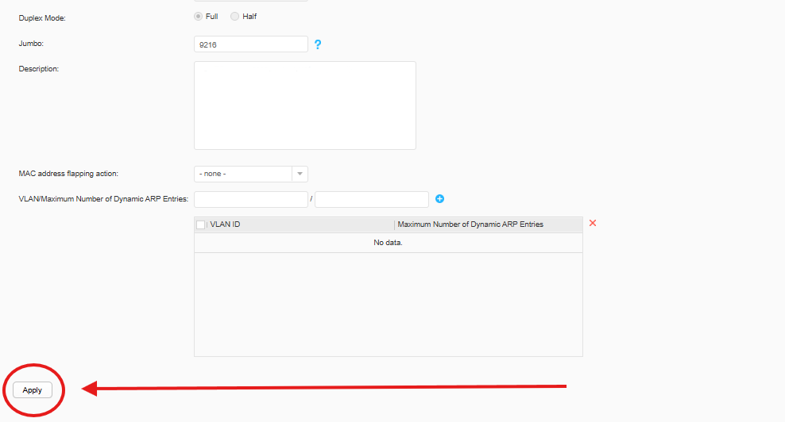

Conexión y Acceso al Switch
Para acceder al switch, conecta un cable de red al puerto ETH del panel frontal.
Luego, asigna una IP a tu PC entre 192.168.1.2 y 192.168.1.200, e ingresa a 192.168.1.253 desde el navegador.
Si aparece una advertencia de seguridad, selecciona opciones avanzadas → Continuar de todos modos.
Una vez ingresado a la pagina te aparecera una pantalla para crear el usuario de administrador del switch, el mismo te solicitara el nombre del usuario la contraseña confirmar la contraseña, y la contraseña para acceder desde la consola. Luego le damos a Registrar.
Luego nos pedira que ingresemos el usuario y la contraseña creada anteriormente.
Una vez ingresado al sw ya podemos comenzar con la configuracion incial.
Primera Pantalla Dentro del Switch
Una vez dentro, verás una ventana inicial de bienvenida.

Desactiva las actualizaciones automáticas tocando en Never remind again para controlarlas manualmente.
Cambiar IP de Acceso
Dirígete a Configuration → Basic Services → Interface Settings y selecciona Manage Interface Settings.
Modifica IP address y Mask según la nueva configuración. Luego presiona Apply.
Recuerda: al cambiar la IP perderás la conexión hasta reasignar una IP en el mismo rango a tu PC.
Guarda la configuración con el botón Save → Ok.
Crear VLANs
Ve a Configuration → Basic Services → VLAN y presiona Create.
Completa los campos:
- VLAN ID: Número identificador (ej. 2)
- Description: Nombre o propósito
- MAC address learning: Activado
- Create VLANIF: Solo si el switch funcionará como router
Presiona Ok para crear la VLAN. Repite según sea necesario.
Poner puerto en Access
Un puerto en modo Access permite conectar un solo dispositivo o VLAN.
Para configurarlo debemos ingresar a al Switch y tocar la opcion de Configuration que aparece arriba.
Luego debemos seleccionar la opcion de "Basic Services" en el lado izquierdo de la pagina, segunda opcion.
Luego debemos elegir la primera opcion que aparece al desplegarse la opcion anterior y veremos todos los puertos que tiene el Switch y unos botones en la parte superior, de estos debemos seleccionar el que dice "Customized" para asi poder configurar el puerto.
Una vez ingresado a dicha opcion seleccionamos el o los puertos que queremos configurar en access y nos apareceran una opciones en la pantalla mas abajo.
Debemos verificar que la casilla que dice "Enable link aggregation" se encuentre destildada o tildada dependiendo si queremos que los puertos seleccionados funcionen como uno solo o como puertos individuales (la configuracion de puertos en conjunto esta en otro apartado).
La segunda opcion es "Interface Status" esto configura al puerto como apagado o prendido.
Luego tenemos la opcion de "Work Mode" esto indicara en que capa debe estar el puerto, en capa dos si esta como Switch o en capa 3 en caso de estar como Router.
Luego tenemos la opcion de "Link Type" en esta seleccionaremos el modo que obtendra el puerto, la opcion para ponerlo en access es la que dice "Access".
Luego tenemos la cansilla de "Default VLAN" en esta debemos seleccionar la vlan que le asignaremos al puerto.
Luego tenemos el boton de "Auto-Negotiation" que indicara si queremeos que el puerte negocie la velocidad automaticamente o queremos indicarle nosotros que velocidad va a manejar.
En la casilla de "Interface Rate" podremos indicar la velocidad del puerto en caso de que hayamos elegido seleccionarlo nosotros.
En la opcion de "Duplex Mode" tenemos la opcion de "Full" este permite que el trafico se trasmita en ambas direcciones, es decir puede enviar y recibir paquetes simultaneamente, permitiendo asi que no haya demoras en el trafico y evitando colisiones, esto es posible gracias al par trenzado de los cables Ethernet y debido a la inteligencia de los Switches que permiten recibir (RX) y trasmitir (TX) datos de forma independiente. La opcion de "Half" hace que el puerto solo funcione en una direccion, es decir no puede trasmitir y recibir al mismo tiempo. Cuando esta por enviar un paquete escucha y se fija que no se este usando, si el puerto esta en uso espera un tiempo aleatorio de tiempo y vuelve a intentarlo, esto genera demora en la red y colisiones.
El siguiente apartado es "Jumbo" esto indica tamaño maximo en byte que puede tener el paquete.
Luego esta el apartado de "Description" en este ingresaremos una descripcion breve sobre lo que conectaremos en ese puerto.

Despues tenemos la opcion de "MAC address flapping action" en el podemos configurar lo que debe hacer el Switch cuando detecta el flapping de una MAC. Las opciones del mismo son "Error-down" que lo que hace es que cuando detecta un flapping apaga el puerto, y "quit-vlan"que lo que hace es que cuando detecta el flapping deja de aprender la direccion MAC en donde se genera el flap.
La otra opcion es "VLAN/Maximum Number of Dynamic ARP Entries" que es para limitar el numero maximo de asociaciones de ip a mac que va a establecer por vlan, esto se utiliza para evitar ataques de agotamiento de Tabla ARP, controlar los recursos del Switch y previsibilidad. Se recomienda la utilizacion para VLANs accesibles por usuarios no confiables, como redes de invitados, DMZs o redes de acceso publico.
Luego de todas de configurar todo debemos apretarl el boton de "Apply" que aparece abajo a la izquierda para aplicar la configuracion en el Switch.
Aparecera una ventana emergente, le damos a "Ok".
Luego debemos ir al inicio de la pagina y tocar el boton de "Save" que aparece arriba a la derecha, esto guardara la configuracion del Switch.
Aparecera una ventana emergente le damos a "Ok".
Poner puerto en Trunk
El modo Trunk permite transportar múltiples VLAN por un solo puerto, esto se utiliza cuando queremos conectar un dispositivo que deba tener varias interfaces de red en simultaneo, como los Switches, APs, Routers, etc.
Para configurarlo debemos ingresar a al Switch y tocar la opcion de Configuration que aparece arriba.
Luego debemos seleccionar la opcion de "Basic Services" en el lado izquierdo de la pagina, segunda opcion.
Luego debemos elegir la primera opcion que aparece al desplegarse la opcion anterior y veremos todos los puertos que tiene el Switch y unos botones en la parte superior, de estos debemos seleccionar el que dice "Customized" para asi poder configurar el puerto.
Una vez ingresado a dicha opcion seleccionamos el o los puertos que queremos configurar en Trunk y nos apareceran una opciones en la pantalla mas abajo.
Debemos verificar que la casilla que dice "Enable link aggregation" se encuentre destildada o tildada dependiendo si queremos que los puertos seleccionados funcionen como uno solo o como puertos individuales (la configuracion de puertos en conjunto esta en otro apartado).
La segunda opcion es "Interface Status" esto configura al puerto como apagado o prendido.
Luego tenemos la opcion de "Work Mode" esto indicara en que capa debe estar el puerto, en capa dos si esta como Switch o en capa 3 en caso de estar como Router.
Luego tenemos la opcion de "Link Type" en esta seleccionaremos el modo que obtendra el puerto, la opcion para ponerlo en troncal es la que dice "Trunk".
Luego, en la seccion de "Default VLAN" debemos seleccionar la VLAN default que va a tener el puerto, esto va a indicar que interface de red manejara el puerto. En caso de no necesitar una VLAN de administracion para el puerto se deja en 1 ya que es obligatorio completarlo.
En el apartado de "Pass VLAN(Tagged)" debemos indicar todas las vlan que escuchara el puerto.
Luego tenemos el boton de "Auto-Negotiation" que indicara si queremeos que el puerte negocie la velocidad automaticamente o queremos indicarle nosotros que velocidad va a manejar.
En la casilla de "Interface Rate" podremos indicar la velocidad del puerto en caso de que hayamos elegido seleccionarlo nosotros.
En la opcion de "Duplex Mode" tenemos la opcion de "Full" este permite que el trafico se trasmita en ambas direcciones, es decir puede enviar y recibir paquetes simultaneamente, permitiendo asi que no haya demoras en el trafico y evitando colisiones, esto es posible gracias al par trenzado de los cables Ethernet y debido a la inteligencia de los Switches que permiten recibir (RX) y trasmitir (TX) datos de forma independiente. La opcion de "Half" hace que el puerto solo funcione en una direccion, es decir no puede trasmitir y recibir al mismo tiempo. Cuando esta por enviar un paquete escucha y se fija que no se este usando, si el puerto esta en uso espera un tiempo aleatorio de tiempo y vuelve a intentarlo, esto genera demora en la red y colisiones.
El siguiente apartado es "Jumbo" esto indica tamaño maximo en byte que puede tener el paquete.
Luego esta el apartado de "Description" en este ingresaremos una descripcion breve sobre lo que conectaremos en ese puerto.
Despues tenemos la opcion de "MAC address flapping action" en el podemos configurar lo que debe hacer el Switch cuando detecta el flapping de una MAC. Las opciones del mismo son "Error-down" que lo que hace es que cuando detecta un flapping apaga el puerto, y "quit-vlan"que lo que hace es que cuando detecta el flapping deja de aprender la direccion MAC en donde se genera el flap.
La otra opcion es "VLAN/Maximum Number of Dynamic ARP Entries" que es para limitar el numero maximo de asociaciones de ip a mac que va a establecer por vlan, esto se utiliza para evitar ataques de agotamiento de Tabla ARP, controlar los recursos del Switch y previsibilidad. Se recomienda la utilizacion para VLANs accesibles por usuarios no confiables, como redes de invitados, DMZs o redes de acceso publico.
Luego de todas de configurar todo debemos apretarl el boton de "Apply" que aparece abajo a la izquierda para aplicar la configuracion en el Switch.
Luego de todas de configurar todo debemos apretarl el boton de "Apply" que aparece abajo a la izquierda para aplicar la configuracion en el Switch.
Aparecera una ventana emergente, le damos a "Ok".
Luego debemos ir al inicio de la pagina y tocar el boton de "Save" que aparece arriba a la derecha, esto guardara la configuracion del Switch.
Aparecera una ventana emergente le damos a "Ok".
Realizar LAG
Un LAG agrupa varios puertos físicos para mayor ancho de banda y redundancia.
Para configurarlo debemos ingresar a al Switch y tocar la opcion de Configuration que aparece arriba.
Luego debemos seleccionar la opcion de "Basic Services" en el lado izquierdo de la pagina, segunda opcion.
Luego debemos elegir la primera opcion que aparece al desplegarse la opcion anterior y veremos todos los puertos que tiene el Switch y unos botones en la parte superior, de estos debemos seleccionar el que dice "Customized" para asi poder configurar el puerto.
Una vez ingresado a dicha opcion seleccionamos los puertos que queremos configurar en LAG y nos apareceran una opciones en la pantalla mas abajo.
En la opcion de "Enable link aggregation" debemos tildar la casilla.
La segunda opcion es "Interface Status" esto configura al puerto como apagado o prendido.
Luego tenemos la opcion de "Work Mode" esto indicara en que capa debe estar el puerto, en capa dos si esta como Switch o en capa 3 en caso de estar como Router.
En la opcion de "Load Balancing mode" tenemos varias opciones para seleccionar. Primero debemos saber que en el Load Balancing el switch utiliza un algoritmo de hashing para decidir por cuál de los enlaces físicos del grupo debe viajar una conversación completa, debido a que no se puede divir un paquete entre todos los puertos que conforman el LAG ya que llegaria desordenado al destino.
La primera opcion es "dst-ip" lo que hace esta opcion es calcular el hash con la IP de destino.
La segunda opcion es "dst-mac" esta realiza el calculo solo con la MAC de destino.
La tercera opcion es "src-ip" esta calcula el hash con la IP de origen.
La cuarta opcion es "src-mac" esta calcula el hash con la MAC de origen.
La quinta opcion es "src-dst-ip" Usa ambas IPs. Este es un modo muy común y recomendado. Proporciona una buena distribución si tienes muchos clientes diferentes (diferentes IP de origen) accediendo a uno o varios servidores (IP de destino).
La sexta opcion es "src-dst-mac" Usa ambas MACs. El problema es que si un router (MAC_Router) se comunica con un único servidor (MAC_Servidor), todas las conversaciones tendrán las mismas MACs de origen y destino. Como resultado, todo el tráfico usará un solo enlace del LAG, desperdiciando el resto. Es por eso que el balanceo de Capa 2 es poco utilizado en enlaces importantes.
En la casilla de "Eth-Trunk" debemos poner el numero del LAG que estamos generando, se recomienda que sea un numero descriptivo, por ejemplo el numero del puerto mas alto que tiene el LAG.
En la parte de "Eth-Trunk Mode" tenemos que seleccionar el modo del LAG.
La primera opcion es "Manual load balancing mode" esto lo que hace es asignar conversaciones o flujos completos a un enlace físico específico dentro del LAG. Es decir, llega el trafico al puerto, se aplica el algoritmo de hash y seleccionar un purto fisico del LAG para enviar el paquete.
La segunda opcion es "Static LACP" lo que hace es crea el LAG de forma segura y automatica, verifica que todos los puertos del grupo se esten comunicando a cada segundo y reacciona de forma instantanea cuando uno de ellos falla para enviar los paquetes por alguno de los restantes.
Luego tenemos la opcion de "Link Type" en esta podemos seleccionar el formato del puerto.
- La primera opcion "Access" pertenece a una sola VLAN, envia y recibe trafico sin etiquetar (untagged), esta diseñado para conectar dispositivos finales que no entienden de VLANs, como las PC, impresoras, etc.
- La segunda opcion "Trunk" Puede trasporta trafico de multiples VLANs a la vez, envia y recibe trafico etiquetado (tagged), usando el estandar 802.1Q. cada trama lleva una etiqueta que dice a que VLAN pertence, puede tener una VLAN nativa, cuyo trafico viaja sin etiquetar. Esta diseñada para conectar switches entre si, o a routers y firewalls.
- La tercera opcion "Hybrid"" combina las características de un puerto de acceso (access) y un puerto troncal (trunk) y añade aún más flexibilidad. Te permite controlar, por cada VLAN, si el tráfico sale del puerto etiquetado (tagged) o sin etiquetar (untagged).
En la casilla de "Default VLAN" debemos seleccionar la VLAN que se le asignara a los puertos marcados.
La casilla de "Pass VLAN(Tagged)" aparecera solo si seleccionamos que el puerto sea Trunk o Hybrid y debomos poner las VLANs que pasaran por el puerto.
Luego tenemos el boton de "Auto-Negotiation" que indicara si queremeos que el puerte negocie la velocidad automaticamente o queremos indicarle nosotros que velocidad va a manejar.
En la casilla de "Interface Rate" podremos indicar la velocidad del puerto en caso de que hayamos elegido seleccionarlo nosotros.
En la opcion de "Duplex Mode" tenemos la opcion de "Full" este permite que el trafico se trasmita en ambas direcciones, es decir puede enviar y recibir paquetes simultaneamente, permitiendo asi que no haya demoras en el trafico y evitando colisiones, esto es posible gracias al par trenzado de los cables Ethernet y debido a la inteligencia de los Switches que permiten recibir (RX) y trasmitir (TX) datos de forma independiente. La opcion de "Half" hace que el puerto solo funcione en una direccion, es decir no puede trasmitir y recibir al mismo tiempo. Cuando esta por enviar un paquete escucha y se fija que no se este usando, si el puerto esta en uso espera un tiempo aleatorio de tiempo y vuelve a intentarlo, esto genera demora en la red y colisiones.
El siguiente apartado es "Jumbo" esto indica tamaño maximo en byte que puede tener el paquete.
Luego esta el apartado es "Description" en este ingresaremos una descripcion breve sobre lo que conectaremos en ese puerto.
Despues tenemos la opcion de "MAC address flapping action" en el podemos configurar lo que debe hacer el Switch cuando detecta el flapping de una MAC. Las opciones del mismo son "Error-down" que lo que hace es que cuando detecta un flapping apaga el puerto, y "quit-vlan"que lo que hace es que cuando detecta el flapping deja de aprender la direccion MAC en donde se genera el flap.
La otra opcion es "VLAN/Maximum Number of Dynamic ARP Entries" que es para limitar el numero maximo de asociaciones de ip a mac que va a establecer por vlan, esto se utiliza para evitar ataques de agotamiento de Tabla ARP, controlar los recursos del Switch y previsibilidad. Se recomienda la utilizacion para VLANs accesibles por usuarios no confiables, como redes de invitados, DMZs o redes de acceso publico.
Luego de todas de configurar todo debemos apretarl el boton de "Apply" que aparece abajo a la izquierda para aplicar la configuracion en el Switch.
Aparecera una ventana emergente, le damos a "Ok".
Luego debemos ir al inicio de la pagina y tocar el boton de "Save" que aparece arriba a la derecha, esto guardara la configuracion del Switch.
Aparecera una ventana emergente le damos a "Ok".